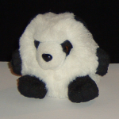
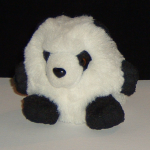
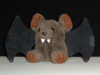
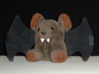

Printing Pictures on the Surface of Polyhedra
by Simon Tatham
Introduction
In late 2003, I wrote a set of small programs to work with
polyhedra, as part of a project investigating the
construction of polyhedra from repelling
points on a sphere.
In particular, among those programs is a script,
drawnet.py,
which takes as input a file containing a 3D model of a polyhedron
and produces a flat net, complete with tabs, which you can cut out
and glue together to make the polyhedron in question.
Once I'd written that script, I started to wonder if there were any
other interesting uses for it. One quickly sprang to mind: if I had
some sort of machine-processable description of a picture drawn on
the surface of a sphere, then it surely shouldn't be too difficult
to adapt
drawnet.py
so that it projected that image on to its input polyhedron, and
produced a net with pieces of the picture drawn on the faces. Then
you could cut, score, fold and glue as usual, and you'd end up with
a polyhedron that had your picture drawn on its surface. This would
enable me to make, for example, polyhedral globes.
(Yes, I know you can just buy icosahedral globes, or
freely download an
existing printable net.
But I thought it would be more fun to make my own, starting from raw
data about the shape of the Earth. Also, my technique of starting
with a spherical image and specifying the polyhedron at the last
moment is more adaptable: if I happen to want a cubic globe, or a
dodecahedral one, or an icosahedron with the poles in the centres of
faces instead of at vertices, or even a tetrahedral globe
for some strange reason, it's the work of a couple of minutes to
re-run the program with different parameters and print a different
net.)
Once I'd put together the infrastructure to do this, I found a few
other uses for it. On this page I exhibit the various polyhedral
pictures I've developed, provide PDF nets for download, and talk a
bit about how they were done.
General technique
All the pictures I've drawn have been created by first designing a
spherical image and then projecting it on to a polyhedron. The
projection I used is the obvious one for this purpose, the gnomonic
projection: to determine the colour of a point on the
polyhedron, a line is drawn between that point and the centre of the
sphere, and whatever point on the sphere it intersects determines
the colour used. This projection has the property that great circle
arcs (geodesics on the sphere) are mapped to straight lines
(geodesics in the plane).
Distortion due to the gnomonic projection increases the greater the
angle between the sphere surface and the corresponding piece of
plane. This means that in my polyhedral models, the greatest
faithfulness to the original spherical image is found at the centres
of the faces of the polyhedron, and the greatest distortion at the
edges and vertices.
Generally I've designed my spherical images by means of defining
polygons on the sphere: sequences of points connected in a cycle by
great circle arcs. Each polygon is filled in a given colour; if many
colours are needed, many polygons must be used.
Defining a polygon on a sphere does not give a clearly defined
inside and outside: any closed curve on a sphere merely divides the
surface into two disjoint regions, and you must then establish a
convention as to which is inside and which outside. The cleanest
solution to this would have been to define the boundary curve as
always going in the same direction around the region: if we chose
that direction to be anticlockwise, for example, then the inside
region would be the one on your left if you stood on the surface of
the sphere and walked along the curve.
I did try designing a spherical image format based on this approach,
but it proved impractical: projecting a region of this type on to an
arbitrary plane polygon turns out to have a lot more special cases
than you think it does. So instead I resorted to a much more ad-hoc
approach: I simply constrain all my spherical polygons to cover a
reasonably small area of the sphere's surface, and then provided a
polygon remains closed when projected on to a plane, I always know
that the inside of the polygon on the plane is the inside of it on
the sphere. This enables me to do the projection in PostScript,
which turns out to be convienient, and then to simply rely on
PostScript's clip operator to constrain the projected
image to the appropriate plane polygon. Another advantage of this
comparatively ad-hoc approach is that it also allows me to use
PostScript's other graphical primitives when they seem appropriate:
for example, I can use stroke if I want to do line
drawings on the polyhedron's surface.
The pictures
Click on the pictures of the polyhedra below to see a detailed page
about each model, complete with downloadable PDF nets to make your
own.
 My first picture of this type was a polyhedral globe. I generated
the data using the
GTOPO30
data set from the
US Geological Survey,
which gives the elevation in metres above sea level for a set of
points spaced across the entire globe with maximum separation of
about a kilometre. However, since I only had a black and white
printer at the time, my initial globe ignored most of the detail of
the elevation data, and simply drew land in black and sea in white.
My first picture of this type was a polyhedral globe. I generated
the data using the
GTOPO30
data set from the
US Geological Survey,
which gives the elevation in metres above sea level for a set of
points spaced across the entire globe with maximum separation of
about a kilometre. However, since I only had a black and white
printer at the time, my initial globe ignored most of the detail of
the elevation data, and simply drew land in black and sea in white.
 
Searching for other things I could do with a black and white
printer, I hit on the idea of making a polyhedral model of
Amble,
a small fluffy panda who lives with some good friends of mine. Amble
is entirely black and white, and basically spherical in shape, so he
was an excellent model for learning the art of actually
drawing spherical images (as opposed to mechanically
constructing them from existing data, as I did for the globe).

Searching for other things I could do with a black and white
printer, I hit on the idea of making a polyhedral model of
Amble,
a small fluffy panda who lives with some good friends of mine. Amble
is entirely black and white, and basically spherical in shape, so he
was an excellent model for learning the art of actually
drawing spherical images (as opposed to mechanically
constructing them from existing data, as I did for the globe).
 Amble was a success, so I wondered about modelling other animals.
Finding a good one within my monochrome constraint proved difficult,
though: there are quite a few attractive black and white animals
(zebra, penguin, Dalmatian), but most of them depend critically on
their shape. A polyhedral model of a Dalmatian, for
instance, would just be a spotty polyhedron with a face, and
wouldn't really capture the appeal of the original. I eventually
found a good subject in the
badger;
and as an added bonus, my friend
Janet
is fond of badgers, so I knew she'd like to have one after I'd made
it.
Amble was a success, so I wondered about modelling other animals.
Finding a good one within my monochrome constraint proved difficult,
though: there are quite a few attractive black and white animals
(zebra, penguin, Dalmatian), but most of them depend critically on
their shape. A polyhedral model of a Dalmatian, for
instance, would just be a spotty polyhedron with a face, and
wouldn't really capture the appeal of the original. I eventually
found a good subject in the
badger;
and as an added bonus, my friend
Janet
is fond of badgers, so I knew she'd like to have one after I'd made
it.
 At this point, my frustration with these models being constrained to
black and white finally motivated me (along with a few other things)
to buy a colour laser printer. One of the first things I did with it
was to go back to my original polyhedral globe, and turn it into
full colour by rendering different elevations in different colours.
The result is much more attractive than the black and white globe,
if you have the printer technology to build it.
At this point, my frustration with these models being constrained to
black and white finally motivated me (along with a few other things)
to buy a colour laser printer. One of the first things I did with it
was to go back to my original polyhedral globe, and turn it into
full colour by rendering different elevations in different colours.
The result is much more attractive than the black and white globe,
if you have the printer technology to build it.
 
Also, my polyhedral model of Amble was feeling a bit lonely without
a polyhedral model of Amble's best friend
Eek!
the bat to talk to. Now that I had colour, Eek! became a feasible
project, although I had to perpetrate a bit of a bodge to get his
wings on.

Also, my polyhedral model of Amble was feeling a bit lonely without
a polyhedral model of Amble's best friend
Eek!
the bat to talk to. Now that I had colour, Eek! became a feasible
project, although I had to perpetrate a bit of a bodge to get his
wings on.
 It's well known among polyhedra enthusiasts that the regular
dodecahedron has a special relationship with the cube: given a
dodecahedron, you can find eight of its 20 vertices which are the
vertices of a cube, such that the edges of the cube run along face
diagonals of the dodecahedron. In fact, by symmetry, you can find
five overlapping such sets of eight vertices.
My friend
Gareth
teaches maths to undergraduates, and thought it would be instructive
(and pretty) to have a model of a dodecahedron with those cubes
drawn on its surface, for discussing the symmetry group of the
dodecahedron. So I made him one.
It's well known among polyhedra enthusiasts that the regular
dodecahedron has a special relationship with the cube: given a
dodecahedron, you can find eight of its 20 vertices which are the
vertices of a cube, such that the edges of the cube run along face
diagonals of the dodecahedron. In fact, by symmetry, you can find
five overlapping such sets of eight vertices.
My friend
Gareth
teaches maths to undergraduates, and thought it would be instructive
(and pretty) to have a model of a dodecahedron with those cubes
drawn on its surface, for discussing the symmetry group of the
dodecahedron. So I made him one.
 Once the cube-marked dodecahedron had started me thinking in terms
of simple programmatically generated diagrams rather than
representations of real-world objects, another obvious model sprang
to mind: a physical instantiation of the RGB colour cube (or rather,
its outer surface). Mostly just because it looks pretty, although it
also turns out to be a demanding test of a printer's colour
response.
Once the cube-marked dodecahedron had started me thinking in terms
of simple programmatically generated diagrams rather than
representations of real-world objects, another obvious model sprang
to mind: a physical instantiation of the RGB colour cube (or rather,
its outer surface). Mostly just because it looks pretty, although it
also turns out to be a demanding test of a printer's colour
response.
Designing your own pictures
If you want to design polyhedral pictures of your own using my
software, here's how. Unfortunately you will need to understand some
linear algebra and some PostScript programming to do this: I don't
have a pre-cooked solution for people who just want to play with a
drawing package. (A drawing package which used a sphere as its
canvas would be a really nice way to do this sort of thing, but it
would cost an enormous amount of implementation effort for a
relatively minor application.)
You need to start by downloading my software suite,
polyhedra.tar.gz,
from my other
polyhedra page. This is all written in
basic core Python, so provided you have Python installed on your
system you should be able to run the programs. (If you don't have
Python installed, you'll need to
install it, which should be
possible on most major operating systems.)
Now you'll need to write a piece of PostScript which creates a
spherical image. In fact the PostScript must define not only the
image, but also the projection on to the faces of the solid.
Specifically, it must define a procedure called
picture, which takes two arguments:
-
An array of length 9, containing a 3×3 matrix in columns-first
order. (That is, the first column of the matrix is stored in
elements 0,1,2 of the array, and the first row is stored in elements
0,3,6.) This matrix is guaranteed to be orthogonal.
-
A z-coordinate.
The picture procedure is then expected to transform its
spherical image by premultiplying all coordinates by the given
matrix, project the result on to the plane which has the specified
z-coordinate, and draw it using PostScript drawing operators. The
caller will have already transformed the coordinate space so that
the result appears in the right place, and used clip to
constrain the output to the appropriate polygon.
Once you have such a picture file, producing a polyhedral net should
be as simple as running drawnet.py in the normal way
(providing an input polyhedron file and an output PostScript file
name), but also giving an extra argument which uses -p
to specify the picture file. For example, one might run
./drawnet.py -pmypicture.ps dodecahedron mynet.ps
(having previously acquired a polyhedron file describing a
dodecahedron, and written a picture description in
mypicture.ps). This should generate a file called
mynet.ps which is the net of a dodecahedron with your
picture projected on to it.
(comments to anakin@pobox.com)
(thanks to
chiark
for hosting this page)
(last modified on [insert date here])